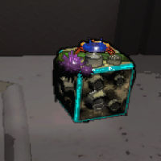

This die was made with Surfaced in mind, so if Surfaced is installed, it will only give Surfaced effects. If Surfaced isn't installed it can have any effect. The wide variety is due to the few great rolls from Surfaced.

Roll 1: Awful, Bad, Mixed
Roll 2: Awful, Bad, Mixed
Roll 3: Bad, Mixed, Good
Roll 4: Bad, Mixed, Good
Roll 5: Good, Great, Mixed
Roll 6: Good, Great, Mixed